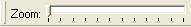
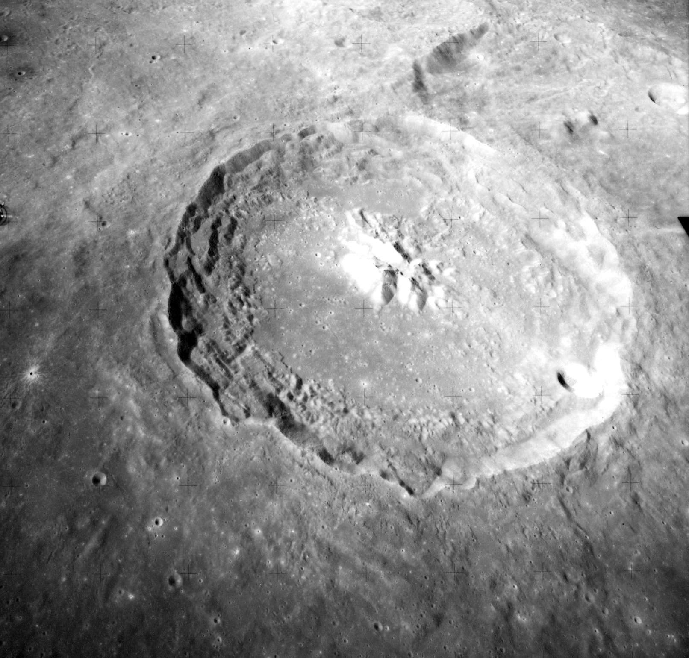
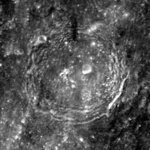
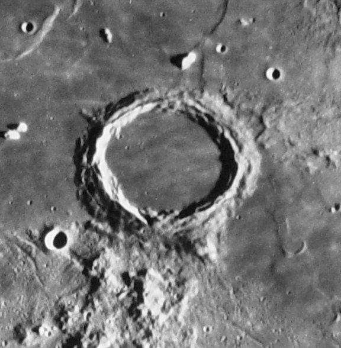
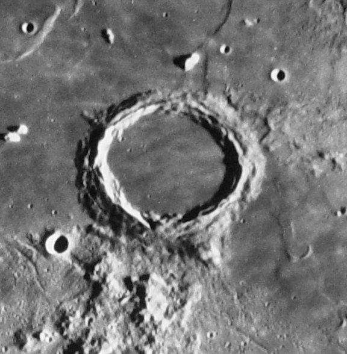
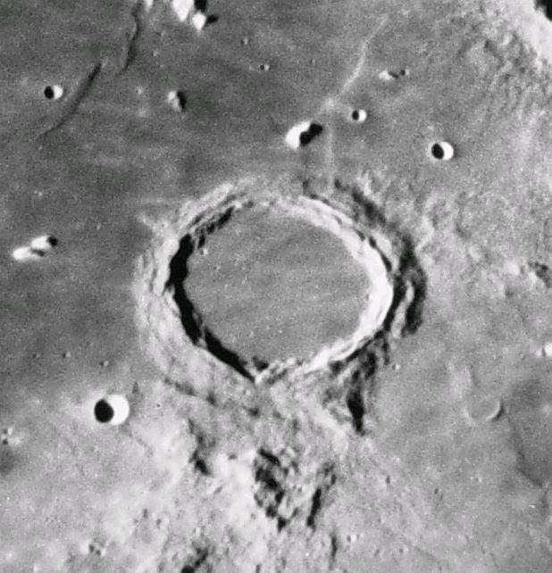
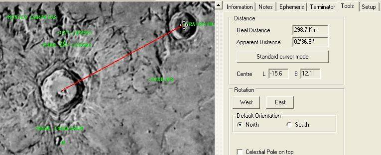

"Virtual Moon Atlas Pro"
Documentation for ATLUN module
December 2009
Welcome to the "Virtual Moon Atlas".
As amateur astronomers, we have tried to create a useful and powerful program for Moon observers usable "on the field" and "on desktop". We try to create functions and interface for ease of use.
The "Virtual Moon Atlas" is now available under 7 different versions :
- "Light / Windows" : version usable on Windows platforms with slower hardware configurations and presenting a 2D flat Nearside and Farside display
- "Expert / Windows" : version usable on Windows platforms with medium hardware configurations and presenting a total 3D globe Nearside and Farside display
- "Pro / Windows" : version usable on Windows platforms with powerful hardware configurations and presenting "Expert" functions plus high definition textures, scientific overlays, added scientific databases, double window display, full screen display and dynamic shadows on phases terminator
- "Pro / Linux" : version usable on Linux platforms with powerful hardware configurations and presenting "Expert" functions plus high definition textures, scientific overlays, double window display, full screen display and dynamic shadows on phases terminator
- "Pro / Mac OS" : version usable on Mac OS platforms with powerful hardware configurations and presenting "Expert" functions plus high definition textures, scientific overlays, double window display, full screen display and dynamic shadows on phases terminator
- "Pocket / Windows Mobile" : version similar to the
"Light" version usable on Windows Mobile Pocket PCs.
These six versions are freely downloadable from VMA Web site. All
these versions can be completed with "Very High Resolution" textures and
numerous pictures libraries also freely downloadable from VMA Web site.
- "Pro CD/ 3OS" version on CD that you can order from
VMA Web site if you don't have a quick Internet link or if you prefer a
convenient package. This version is usable with powerful hardware configurations.
The CD contains the three Windows, Linux and Mac OS "Pro"
installers plus the "High resolution
textures" and several pictures libraries (LOPAM, Apollo, Apollo
Mapping, LAC / LM, Clementine and Consolidated Lunar Atlas)
This CD version can be completed with "Very High Resolution" textures and
others pictures libraries (Best of Amateurs and Kaguya) also freely downloadable from VMA
Web site.
A manual is necessary to discover all the software possibilities because they are always more numerous. We would like you to read the documentation while you try to use the indicated functions.
The present manual describes only Pro version functions.
Have fun, and we hope you enjoy using the program and will recommand it to your friends.
Thank you very much for your confidence.
Christian Legrand and Patrick Chevalley
_____________________________________________________________________________________________________________________
THE VIRTUAL MOON ATLAS "PRO" VERSION MODULES
The "Virtual Moon Atlas" « Pro » version includes today 3 modules :
- "ATLUN" (c)
module : it's the mapping module, the VMA basic module, present in
every version with some important variations in each version.
- "DATLUN" (c)
module : it's the databases management module with very powerful
sort functions. Available only in "Pro" version.
- "PHOTLUN"
(c) module : it's the pictures libraries management module. It owns
powerful pictures treatment functions. Available only in "Pro"
version.
THE "ATLUN MODULE" SCREEN

ATLUN "Windows version" double window screen

ATLUN "MacOS version" with "dynamic shadows" map screen
"ATLUN" screen appears in a "Microsoft Windows style" window. As you can see, the aspect is also the same on MacOS.
As usual, you can minimize or maximize the window, or
choose its size with the buttons in the title bar, on right.
In the "Pro" version, you can open simultaneously two map windows, permitting maps comparisons as on the picture above. It's also possible to open the window of "DATLUN" (c), the database manager and "PHOTLUN" (c) the pictures manager of VMA.
Main window presents:
- Menus and buttons bar
- Map window that can be cut in two map windows as above
- Thumbnails "Information", "Ephemerisis", "Notes",
"Tools", "Settings" and "Terminator" and
the associated windows.
- Status Bar.
All these commands and displays will now be shown in the manual with the "Windows" version

This bar presents menus to access different functions and buttons to quick launch of some other useful functions.
THE "FILE" MENU

Traditional in all Windows softwares, this menu is used here to open DATLUN (c), save screen pictures, to setup printing, to launch Patrick Chevalley's freeware "Sky Charts" if it's installed on your computer, and to quit the atlas.
"Databases" FUNCTION
This function opens a new window containing VMA database manager DATLUN
"Snapshot" FUNCTION
This function can open a new small window containing a map window capture. You can compare this capture with a new configuration applied to the map window.
"Save as" FUNCTION
This function permits you to save the "Map" window as a .jpg or a .bmp file
"Printer setup" FUNCTION
This function permits you, with the use of the regular window selection, to choose your printer and to setup it.
"Print" FUNCTION
This function allows you to print the documents you chose in the printed documents (Map, ephemeris and / or information page).
"Sky chart" FUNCTION
This option is used to launch Patrick Chevalley's freeware "Sky Charts"
to determine Moon position according to stars and horizon. It can help
you for star occultations for example.
"Quit FUNCTION
You can leave the software using this option, closing all the open windows together.
THE "CONFIGURATION" MENU
This menu is used to adjust different parameters in VMA. It presents eight thumbnails
"General" THUMBNAIL

Observatory coordinates
Selecting "Geocentric coordinates", you will see the lunar
globe as if you were positioned on the line joining the center of the
Earth to the center of the Moon.
The software can instead use coordinates of your observing site to display
a real time lunar disk with computations including diurnal libration.
To do this, you have to de-activate "Geocentric coordinates" (uncheck
it) and input the latitude and longitude of your observing
site.
Input also the time shift from GMT including eventual "summer time" in the "Time zone" field.
"Date / Hour" frame
The "Date / Hour" frame is used to precise the hour and the time zone to use.
Filling the box "Use computer hour and time zone" so that VMA use the computer internal clock as a reference.
If you don't fill the box, you can specify your own time zone with the case displayed.
"Language" scrolling list
"Languages" scrolling list allows you to choose language used by the program and database. In this version, only French and English are available. You can also download from VMA Internet site, translations of words used in the menus. Translation pages indicate if database translations are also available.
"Databases" THUMBNAIL

"Databases" boxes
"Databases" boxes allow you to choose the databases
used together by the software. Check only the one useful if your computer
is not too powerful.
When all databases are selected, VMA has more than 9000 entries to manage.
Christian Legrand has presently realized 7 databases completally or partially completed :
- Named formations of Nearside (About 1100 entries)
- Satellitic craters of Nearside (About 5300 entries)
- Named formations of Farside (About 650 entries)
- Satellitic craters of Farside (About 1200 entries)
- Historical sites on the two faces (About 50 entries)
- Pyroclastic deposits (About 100 entries)
- Volcanic domes / ALPO (About 700 entries)
The case "Remove unknown values from report" provides reports with only the formations complete informations
The "User database" frame is used to enter the path to personal databases that you would like to link to ATLUN (c) and DATLUN(c). Beware : these databases must be in "csv" format and contain the same fields as the original databases developed by Christian Legrand for VMA.
New databases are constantly on work. Their boxes will be created in the new VMA coming versions.
"Display" THUMBNAIL

Display boxes
When clicking the "Show the phase" box, a penumbra zone is painted on the lunar globe. Its limit follows the terminator for the date and hour set by the user (See "Ephemerisis thumbnail"). You can set the penumbra properties representation (See "Setup thumbnail").
When clicking the "Show the libration" box, the lunar globe turns slightly so that it shows the effects of the global libration for the date and hour set by the user (See "Ephemerisis thumbnail"). You can set the penumbra properties representation (See "Setup thumbnail").
The libration display takes account of the latitude libration due to the Moon orbit inclination and of the longitude libration due to the Moon variable speed on its elliptical orbit. More, if you choose to input your observing site coordinates (See "Observatory coordinates")., the Moon globe will takes account also of the diurnal libration.
Colors
Clicking on the small colored squares allows you to choose colors
indicating point and formation name label displayed on map.
Labels and marks
Activating the corresponding boxes will make you display a point
showing the chosen formation and / or its official name
When clicking on the "Mark the point of maximum libration" box, an arrow is displayed on the lunar limb where libration effects are maximum.
Activating the corresponding boxes, you display the point (mark) showing the chosen formation, its official name, and the names of the other principal formations visible on the map.
You can choose to center or to place on the right of the formation when using or not the "Center label on formation" box.
The two sliders "Label size" and "Label density" can be used to setup name size and the number of names displayed. You will certainly have several tests to determine the best compromise. These two sliders are also use to setup map printing because the printed map is exact clone of the map displayed in the screen window.
"Textures" THUMBNAIL

This thumbnail presents a matrix for selecting textures according to the applied zoom level. This new function is a very useful way for choosing the textures display.
The program will detect automatically which textures are present (High Resolution or Very High Resolution) and will permet access to the maximum zoom level available with them.
You can choose to keep the same texture for all zoom range or select as above a progressive change parallel to the zoom change.
You have just to select the wished radio button. There can only have one texture choosen for a given zoom level.
We think that it's better to use textures with increasing resolutions according to increasing zoom level. This is the choosen solution in the above exemple.
The "Clementine" photographic texture is a little apart since it's only useful to show formations under "high" sun lighting.
« Textures » choice
The following screen captures show you the Alphonsus crater area with maximum possible zooming with each texture as in the above exemple. Four textures are available :
- "Aerographe with albedo" (USGS aerograph drawing realized from Clementine probe pictures with a uniform shadow, by David Seal from JPL and his team). In this "Expert" version, maximal resolution "Full" is that of the Moon surface seen in a 120 mm (5") instrument.

- "Airbrush relief map" (Aerograph drawing without albedo hues realized from Clementine probe pictures realized by US geological Survey / USGS team, copyright USGS / Astrogeology). Improved by ChristianLegrand. The maximal resolution is like theMoon seen in a 6" / 150 mm instrument.

- "Clementine Photographic" (Mosaïc of Clementine probe pictures realized by professor Mark S. Robinson, and his team of "Northwestern University", copyright USGS / Astrogeology). This texture has a 200 m resolution. It's the most precise "albedo texture" presently available in computer lunar atlases. It's the only textures showing lunar formations without any shadow.

Important note : This texture has been built from Clementine original pictures treated by USGS. This is a remarkable work according to the amount of difficulties that have been encountered. This treatment can induce some formations distorsion at the borders of the plates. Also the position of some formations can be shifted slightly from its real place. We suggest you to confirm the exact aspect of a formation with the aerograph texture if you want to realize a precise survey..
- "Lunar Orbiter Photographic VHR" (Mosaïc of Lunar Orbiters 1, 2, 3, and 4 probes pictures based on new USGS realease, (copyright USGS). In this "Pro" version, this texture has a variable resolution that goes to 200 m resolution on the best places . It's the most precise "shaded relief texture" presently available in computer lunar atlases.

Important note : This texture has been built from Lunar Orbiter original pictures that have been partially "destripped", redimensioned and rotated by USGS. This is a remarkable work according to the amount of difficulties that have been encountered. This heavy treatment can induce some formations distorsion at the borders of the plates. Also the position of some formations can be shifted slightly from their real place. We suggest you to confirm the exact aspect of a formation with the aerograph texture if you want to realize a precise survey.
« Phases » frame
The 2 alternative radio buttons "Phase with relief" et "Phase without relief" are used to activate or not the new "Dynamic shadows" on the terminator :

Phase without "Dynamic shadows" display on the terminator

Phase with regular "Dynamic shadows" display on the terminator
The choice between "Simple" and "Advanced" radio button increase or decrease the intensity of "Dynamic shadows" effect.
This new option gives a more realistic view, but doesn't permit a high power zoom.
The special "Kaguya dynamic shadows" texture downloadable from VMA Web site renders the more realistic view possible and can be compared to the real view when using the eyepiece field.

Phase with special "Kaguya dynamic shadows" display on the terminator. The package can be downloaded freely from VMA Web site.
 .
.
Eyepiece field with special "Kaguya dynamic shadows" display on the terminator. The package can be downloaded freely from VMA Web site.
You don't dream. This is a computer generated view, not a digital picture taken at the eyepiece of an instrument !
"Overlays" THUMBNAIL

VMA "Pro" version includes the ability to apply over the choosen texture an overlay which transparency can be setup so that texture continues to be seen through the overlay. These overlays are transposition of scientific datas coming mainly from the "Clementine", "Lunar Prospector" and Kaguya missions, but they are also colors and geological full globe maps. This allows you to see, for each formation, its relation to most available scientific datas.
"Show overlay" Box
If you fill the "Show overlay" box, you display the overlay choosen with the scrolling list below over the choosen texture.
"Overlays" Scrolling list

If you activate the scrolling list, you can choose in the list the overlay
that you need. Here are the list of the overlays presently involved in
VMA. We will add on our site new overlays to download as soon as they
will be available. You'll find :
- colors and albedo overlays
- a geological overlay
- topographical overlays
- elements concentration overlays
- Neutrons emissions overlays
Colors and albedos overlays presentation
"Albedo" overlay

This overlay shows the Moon surface albedo. It's extracted
from Clementine datas. This overlay id very useful with the "Aerograph
without albedo"
texture because this one doesn't present the albedo display. There
is no caption since it's only an overlay.
"Natural colors" overlay

This overlay tries to show the Moon globe natural color. It's extracted
from a color mosaic realized with Clementine filtered pictures with an
equilibrium between the 3 RGB channels.. There
is no caption since it's only a color.
"Enhanced colors" overlay

This overlay has been obtained while pushing to maximum color contrast enhancement in the three primal spectral colors. There is no caption since it's only a color. It shows subtile colors variations between highlands and mare surface and also shows different lavas flows in these marias.
"Clementine color ratio" overlay

This overlay has been obtained from the Clementine maps of the "PDS Map A Planet"
site. Colors variations indicate lunar surface composition variations.
The Clementine Ratio ("false color") views of the Moon are created by
generating ratio images using 3 of the 5 Clementine UV/Vis camera bands
and combining these into the red, green, and blue channels of a color
image:
Channel Ratio (band/band)
Red 750 nm/415 nm
Green 750 nm/950 nm
Blue 414 nm/750 nm
The color ratio image product serves to cancel out the dominant brightness
variations of the scene (controlled by albedo variations and topographic
shading) and enhances color differences related to soil mineralogy and
maturity. The lunar highlands, mostly old (~4.5 billion years) gabbroic
anorthosite rocks, are depicted in shades of red (old) and blue (younger).
The lunar maria (~3.9 to ~1 billion years), mostly iron-rich basaltic
materials of variable titanium contents, are portrayed in shades of yellow/orange
(iron-rich, low titanium) and blue (iron-rich, higher titanium).
Superimposed on and intermingled with these basic units are materials from
basins and craters of various ages, ranging from the dark reds and blues
of ancient basins to the bright blue crater rays of younger craters. (Reference:
Pieters, C.M., M.I. Staid, E.M. Fischer, S. Tompkins, and G. He, 1994, A
sharper view of impact craters from Clementine data, Science, 266,
1844-1848)
"Physical characteristics" overlays presentation
"Surface temperature" overlay


This overlay has been realized with Internet datas. It shows lunar surface temperature with the sun at the higher point in the sky. It doesn't shows real time surface temperature. The caption shows that temperatures range is between 240 °K (-33 °C) at poles to 400 °K (127 °C) at the equator.
"Clementine Altitude" overlay


The captions are in feet. The left column is based on a linear scale for color spectra, while the right one is based on a linear scale for altitudes.
This overlay is conceived with altimetric datas recorded by Clementine probe and compiled by Maria T. Zuber and her LPI team. The overlay allows you to locate relative altitudes. It has been used to confirm the existence of the "South Pole / Atkein" impact basin in the Southern part of the Farside.
"ULCN 2005" overlay

This overlay is realized with a combination of altimetric datas recorded by Apollo missions, Clementine and Lunar Prospector probes and Earth based datas, specially with radiotelescopes in radar mode. They are online at the USGS site maintained by Brent Archinal and his team . It gives relatives altitudes of formations.
It's recommanded to use this overlay with the texture « Aerograph without albedo ». There is no caption found for this overlay. So it's only indicative informations.
"Kaguya Altitude" overlay


This overlay is realized with altimetric datas recorded by the japanese probe Kaguya and put online by JAXA team. It gives relatives altitudes of formations. It's presently the most precise altimetric lunar planisphere. Native Japanese captions and coordinates grid have been left.
It's recommanded to use this overlay with the texture « Aerograph without albedo ».. Colors caption shows altitude in km.
"Kaguya Altitude 2" overlay


This overlay is a second one realized with altimetric datas recorded by the japanese probe Kaguya and put online by JAXA team. It gives relatives altitudes of formations. It's presently the most precise altimetric lunar planisphere.
« Geological and gravity » overlay presentations
"Geological" overlay

This overlay has been realized with datas available on the USGS "Astrogeology / Webgis" and gathers several different Moon geological maps. Because each of the composing map has its own caption, the global caption, difficult to conceive, is not available presently.
"Rocks types" overlay

This overlay is realized with Clementine probe orbital datas
compiled by Dr Maria T. Zuber and her USGS team. It shows
differences between surface rocks compositions. There is no caption
found for this overlay.
"Soil atomic mass" overlay


This overlay is realized with Lunar Prospector probe datas compiled by Dr Alan Binder and his team. It shows soil atomic mass. It's visible that Nearside seas have higher atomic mass showing heavy elements presence. The caption is in grams / mole.
"Crust thickness" overlay


This overlay is conceived with orbital variations datas recorded by Clementine probe and compiled by Maria T. Zuber and her LPI team. The overlay allows you to visualize the lunar crust thickness under the formations. It will confirm you that this one is the lowest under the marias and the thickest on the Moon Farside.
"Bouger Gravity" overlay


This overlay is conceived with gravimetric datas recorded by Clementine probe and compiled by Maria T. Zuber and her LPI team. They have been completed with Dr Alan Binder and his team results from Lunar Prospector probe.overlay allows you to visualize gravitic anomalies under the formations. The unit is milligals. The biggest anomalies are under the marias showing the famous "mascons" presence. These datas are corrected with the Bouger method taking account of the soil density in the measurement site.
"Free Air Gravity" overlay


This overlay is conceived with gravimetric datas recorded by Clementine probe and compiled by Maria T. Zuber and her LPI team. They have been completed with Dr Alan Binder and his team results from Lunar Prospector probe.overlay allows you to visualize gravitic anomalies under the formations. The unit is milligals. The biggest anomalies are under the marias showing the famous "mascons" presence. These datas are corrected with the "Free air" method taking account of the altitude above the measurement site.
"Geoid anomalies" overlay


This overlay is conceived with graviimetric datas recorded by Clementine probe and compiled by Maria T. Zuber and her LPI team. They have been completed with Dr Alan Binder and his team results from Lunar Prospector probe.overlay allows you to visualize Moon globe shape anomalies which is not perfectly spherical. It whows that the Farside is less round than the Nearside.
« Elements presence » overlays presentation
"Hydrogen" overlay

This overlay is conceived with Dr Alan Binder and his team results from Lunar Prospector probe. This overlay allows you to visualize hydrogen repartition on the surface. There is no caption available presently, but red is for high hydrogen concentrations and blue for the lowest.
"Iron" overlay


This overlay is conceived with Dr Alan Binder and his team results from Lunar Prospector probe. This overlay allows you to visualize iron repartition on the surface. Immediatly, you can see that Nearside marias are rich with iron.
"Iron oxyde / FeO" overlay

This overlay is conceived from Clementine probe datas. FeO (Iron oxydes) values can be useful in identifying basalt-excavating craters, and so possible cryptomares (Basalt seas covered by more recent materials).
"Titane" overlay

This overlay is conceived with Dr Alan Binder and his team results from Lunar Prospector probe. This overlay allows you to visualize titane repartition on the surface. Immediatly, you can see that Nearside marias are rich with this metal.
"Potassium" overlay


This overlay is conceived with Dr Alan Binder and his team results from Lunar Prospector probe. This overlay allows you to visualize potassium repartition on the surface. The measurement unit is based on detection counts. Immediatly, you can see that Nearside marias are rich with this element.
"Gadolinium" overlay

This overlay is conceived with Dr Alan Binder and his team results from Lunar Prospector probe. This overlay allows you to visualize gadolinium repartition on the surface. Immediatly, you can see that Nearside marias are rich with this element.
« Radioactive elements repartition" overlays
"Thorium" overlay

This overlay is conceived with Dr Alan Binder and his team results from Lunar Prospector probe. This overlay allows you to visualize potassium repartition on the surface. No caption is available presently, but red is for high hydrogen concentrations and blue for the lowest.Immediatly, you can see that Nearside marias are also rich with this element.
"Uranium" overlay


This overlay is realized with japanese probe datas compiled by JAXA team. The caption is based on uramium emitted particles count. It can vizualize roughly uranium in formations. It's easily seen that Nearside seas are rich with this element.
"Radon" overlay


This overlay is conceived with Dr Alan Binder and his team results from Lunar Prospector probe. This overlay allows you to visualize radon repartition on the surface. The caption is based on radon emitted particles count. It can vizualize roughly radon in formations.
"Polonium" overlay


This overlay is conceived with Dr Alan Binder and his team results from Lunar Prospector probe. This overlay allows you to visualize polonium repartition on the surface. The caption is based on polonium emitted particles count. It can vizualize roughly radon in formations.
« Neutrons emissions» overlay presentation
"Neutrons epithermal" overlay


This overlay is conceived with Dr Alan Binder and his team results from Lunar Prospector probe. This overlay allows you to visualize number of detected "epithermal" neutrons on the surface. The measurement unit is based on detection counts. Immediatly, you can see that Nearside marias are powerful emiters.
"Neutrons broadband" overlay

This overlay is conceived with Dr Alan Binder and his team results from Lunar Prospector probe. This overlay allows you to visualize number of detected "broadband" neutrons on the surface. The measurement unit is based on detection counts. Immediatly, you can see that Nearside marias are powerful emiters.
"Neutrons fast" overlay


This overlay is conceived with Dr Alan Binder and his team results from Lunar Prospector probe. This overlay allows you to visualize number of detected "fast" neutrons on the surface. The measurement unit is based on detection counts. Immediatly, you can see that Nearside marias are also powerful neutrons emiters.
« Radiations emissions" overlays presentation
"Gamma rays" overlay


This overlay is realized with japanese probe Kaguya datas compiled by JAXA team. The caption is based on gamma rays level detected by the probe. It can vizualize roughly gamma rays levels in formations. It's easily seen that this repartition is rather uniform.
"Transparency" cursor

This cursor allows you to choose the transparency degree of the overlay applied above the texture. It doesn't operate on the texture. When the cursor is on the right, the overlay very visible. On left, the underlaying texture is almost invisible. Choose what degree you would apply to be able to see all the details together. (Example shown without underlaying texture).
 < Non
transparent overlay
< Non
transparent overlay  Transparent overlay
Transparent overlay
"Grid " frame

The radio button « Show grid » displays or not a white grid with meridians and parallels on the lunar globe surface.
The cursor changes grid density. This one varies from 1° until 30 °.

1° Grid

5° Grid

30° Grid
"Pictures" THUMBNAIL

This thumbnail is used to sort the available pictures in the library
because their number will increase constantly, and the pictures display
setup.
Pictures windows number
When clicking on the up and down arrows of the "Number of images
windows" box, you can choose the maximum number of displayed
pictures (10 maximum !). Optimum seems 5, but this depends of the pixels
number and dimensions of your monitor. You can display several pictures
of the same formation to see all the details, or the pictures of several
formations to compare them.
Pictures directories list
You can edit the list of the "picture directories". In addition to the "LOPAM", "Clementine", "Probes", "Apollo", "Apollomapping", "CLA" and "My images"downloadable pictures, you can create one or more new directories to put in your own webcam or CCD pictures, or pictures coming from other sources and legally acquired, such as the "Best of amateurs series" present on VMA Web site..
"Eyepieces" THUMBNAIL

This thumbnail is used to setup parameters of your own eyepieces so thet,
you could display the real Moon aspect when observed in your instrument
with "Eyepiece" context menu function ("LUN"
is for "LUNETTE" = "REFRACTOR" in french).
Eyepieces list
You can enter directly your eyepieces parameters in list fields if you
know them, as shown by the exemple which can be erased. "Name
of the eyepiece" is in the left column and the "apparent
field" in arc minutes in the right column. You can enter up to
10 eyepieces. It's better to enter them in the increasing magnification
way.
Eyepieces parameters computation
Eyepieces parameters can be computed with the help of our calculator. First enter the "Instrument focal length". Then enter the "Eyepiece focal length". Then enter the "Apparent eyepiece field of view" in the third field. This field is that indicated in eyepieces advertisements. For example, Plossl eyepieces apparent field is about 50° and Ultra Wide Angle eyepiece is 82°.
Push the "Compute" button. In the "Real eyepiece field " frame, the area diameter is displayed in arc minutes. In the "Eyepiece magnification" frame, the magnification of the choosen eyepiece is indicated. After that, you have just to copy these two values in the two colums of the lower table.
You can also input directly the orientation view effects according to your instrument type by clicking in the boxes of the "<->" (Right - left inversion) and "N/S" (North / South inversion). If the rectangle is green, so the effect is activated. If it's red, so the effect is not activated. For example : if you use a Schmidt-Cassegrain or a refractor, the "<->" rectangle of the eyepiece must be green, but the "N/S" must be red. For a Newtonian telescope, the "<->" rectangle must be green and the "N/S" must be green too.
"Printing" THUMBNAIL

This thumbnail is used to setup map printing parameters.
"Setup" button
This button shows the standard Windows printing setup window.
Printing format
This area is used to choose printing margins width and change the
Description text width.
Printed documents
These boxes are used to select the documents that will be printed.
The printed map is that of the last window map. Topographic maps are black and white and geologic map are colored with color names in both types. Maybe you will have to change the Description text width to better see printed names.
"Ephemeris" text contains orbital, phase and libration information according to the last date and hour selected in the "Ephemeris" window.
"Description" text contains the information page of the last chosen formation on the map.
"Save map" frame
Displayed map can be printed on paper with white background around the lunar disk to speed up printing and save ink!
"Help" MENU

This menu brings up help tools to aid using the atlas.
"Help" choice
This choice displays the present manual in an independent window.
"Glossary" choice
This choice gives access to a glossary containing more than 100 words and expressions linked to the Moon and its observation.
The glossary is also in an independent window which is divided in three distinct parts :
Upper part contains alphabet letters. Clicking on one of them gives access to the words beginning with this selected letter.
Left lower part is a tree of letters and associated words.
Right lower part contains an explanation of the selected word or expression.
"Encyclopedia" choice
This choice shows you a page with main dimensions of Moon globe and orbit.
"About" choice
This choice shows the version of the program, and indicates how Christian Legrand and Patrick Chevalley divide their work in the creation and development of this atlas.
ZOOM CURSOR

Sliding this cursor from left to right increase zoom magnifying power of the map (See "Map window").
If cursor is on left, lunar globe is entirely visible. Moving it to the
right increases zoom power (zooms in).
Depending on the resolution textures chosen in the settings (See "Settings thumbnail"), zoom will not show new details and map display can become fuzzy.
Display of labels and marks is a function of zoom factor and of labels density (See "labels and marks").
"1:1" BUTTON
Clicking on this button returns the map to the whole lunar
globe display in the "Map window".
"Center" BUTTON

Clicking on this button will make the lunar globe center displayed on the center of your screen when zoom is 1/1. It also centers the formation you have selected.
"North / South " BUTTON

If you click on this button, you immediatly invert the North - South in the "Map" window. It must be used with the "East - West" button below to change from naked eye view to Newtonian view.
"East / West " BUTTON
If you click on this button, you immediatly invert the East - West in the "Map" window. It must be used to change from naked eye view to refractor or catadioptric telescope view.
"Full globe / Rotation" button
When clicking on this button, you access to the most powerful function of ATLUN (c). If the button is Up, the map window shows you the Near Side visible from the Earth with phase and libration applied if you checked the boxes in the "Display" thumbnail of the "Configuration" menu.
But if you click down on this button, you go to "Full globe" mode and the map window displays a complete globe in three dimensions that you will be able to observe on all its faces.
"Libration" BUTTON
If you click on this button, you display or remove the libration effect on the Moon globe of the "Map" window.
"Grid" BUTTON
When clicking on this button, the grid choosen in the "Overlays" thumbnail of the "Configuration" menu is displayed on the luner globe. The space between parallels and meridians is that has been choosen in the thumbnail, from 1 to 30 °.
"Phase" BUTTON
If you click on this button, you display or remove the phase display on the Moon globe of the "Map" window.
If the "Dynamic shadows" option has been selected in the "Textures" thumbnail of the "Configuration" menu, it's displayed.
"Scale" BUTTON
When clicking on this button, a scale in angular dimension is displayed at the left botton of the map window.

Beware ! This scale indicates the "visual" angular size. It doesn't indicate the dimensions on the lunar globe. For measuring distances on the globe, you must use the "distance measure" tool comprised in the "Tools" thumbnail.
"Labels" BUTTON
This button allows you to access the color choice window for map labels. Its use helps a lot to adapt quickly the labels colours to the map hues context, specially with scientific overlays use.
"Neighbor" BUTTON
When clicking on this button, a new picture that contains the names of the formations in the neighborhood of the selected formation. You can click on one of them to go directly there.

"Picture" BUTTON
The "Picture" button gives now access to PHOTLUN (c), the VMA Pro pictures manager.
The "PhotLun" (c) window
The miniatures band appears with the menu bar.

This module allows a more easier choice for displaying pictures because of the pre-visualization miniatures pictures.
We send you back to the specific PHOTLUN (c) documentation to discover all its possibilities and specially the pictures treatment functions (Rotation, zoom, contrast and luminosity).
The pictures library
The pictures library is modular, so you can add a number of sources. You can download for this version picture files coming from various sources. These files have obtained the necessary authorizations to be used only in VMA.
"LUNAR ORBITER PHOTOGRAPHIC ATLAS OF THE MOON" PICTURES


"Aristillus" and "Vallis Alpes"
These pictures have been extracted from the electronic version
of the "Lunar Orbiter Photographic Atlas of the Moon" (LOPAM) realized
by Jeff Gillis and his team at the Lunar and Planetary Institute.
This remarkable atlas can be consulted on the site
http://www.lpi.usra.edu/resources/lunar_orbiter/
Christian Legrand has extracted from each of the more than 200 LOPAM
photos, pictures of each named formation. He compiled about 3000 pictures.
Then, he chose the best one for each formation.
For some formations, which were spread on several photos, it was
necessary to cut and join several peaces. Some others need a new orientation.
All these pictures were then compressed so that small size for downloading
that doesn't alter quality.
Please note that these pictures have been "lines removed" using the powerful software provided by Niels Noordhoek
Despite of this important work, about 150 formations haven't been recovered in the LOPAM photos because Lunar Orbiter 4 didn't photography the entire visible face with sufficient resolution.
For those who don't wish to download all the pictures, Christian Legrand has selected the more famous lunar formations (130) and has gathered them in the "Lunar stars" library.
These pictures are under "Lunar and Planetary Institute" copyright and cannot be used outside VMA.
LOPAM pictures are in the "LOPAM" sub-directory.
APOLLO MISSIONS PICTURES

With the goal to provide the most complete image of each lunar formation, Christian Legrand has also selected in the Apollo missions pictures more than 400 pictures related to more than 300 different formations. These pictures are very often from the hand-held Hasselblad pictures.
These pictures are provided under the general copyright of the "National Air and Space Administration" (NASA) which own reproduction rights ( http://www.nasa.gov ) and they can't be used outside of the atlas.
Picture name indicates the formation name and the Apollo mission that took the picture when it's known : so COPERNICUS_A12.JPG is the name of a picture of Copernicus taken during Apollo 12 mission.
APOLLO pictures are in the "Apollo" sub-directory.
APOLLO MAPPING CAMERAS MISSIONS

Theophilus seen by Apollo 16 Mapping Camera.
Put online by the "Lunar and Planetary Institute", "Apollo Mapping Cameras" pictures, who were on board "Apollo Service Modules", are among the most detailed ever realized. Christian Legrand has selected among hundreds of published frames, those which give the most interesting views of Nearside formations as those above.
Christian Legrand has extracted about 1000 pictures and has choosen about 700 ones.
These pictures are provided under the general copyright of the "Lunar and Planetary Institute" and they can't be used outside of the atlas.
Picture name indicates the formation name and the Apollo mission that took the picture when it's known : so COPERNICUS_A12.JPG is the name of a picture of Copernicus taken during Apollo 12 mission.
APOLLO MAPPING pictures are in the "Apollomapping" sub-directory.
LUNAR PROBES PICTURES


Soviet Luna 17 pictured by mobile robot Lunakhod 1 (Left) and Tycho crater walls panorama taken by american probe Surveyor 7 (Right).
Many other automatic probes than Lunar Orbiter 4 have measured and photographed the Moon. These are american Ranger, Lunar Orbiter 1,2,3,5 and Surveyor. In the historical "Moon race" context, ex USSR has also launched a great number of Luna probes.
This picture library realized by Christian Legrand contains about 120 pictures taken by these probes. Found on the Web, these pictures are provided under the general copyright of the "National Air and Space Administration" (NASA) which own reproduction rights ( http://www.nasa.gov ) and they can't be used outside of the atlas. Soviet probes pictures have no identified copyright owners.
Picture name indicates the formation name and the probe or Apollo mission
that took the picture when it's known : The following code is used associated
with XX as the mission number :
- AXX : Apollo
- LOXX : Lunar Orbiter
- LUXX : Luna
- RAXX : Ranger
- SUXX : Surveyor
For example, LUNA 9_LU9.jpg is a picture of Luna 9 site taken by Luna 9 probe itself.
These pictures are provided under the general copyright of the "National Air and Space Administration" (NASA) which own reproduction rights ( http://www.nasa.gov ) and they can't be used outside of the atlas.
Probes pictures are in the "Probes" sub-directory.
CLEMENTINE PROBE PICTURES


Arzachel crater picture taken by Clementine (Left) compared to that of LOPAM (Right).
The other great source of lunar formations pictures is the american Clementine mission. This small probe has mapped the lunar surface with à 100 to 200 m per pixel.
Christian Legrand works on the general files and extracts pictures of each formation.
Clementine pictures are complementary to those of LOPAM. If their resolution and general quality are better, they have a big defect for terrestriel observers. They were taken with Meridian passing Sun, with the most vertical possible lighting that erases shadows and gives the formation albedo.
For formations situated in a + 45 ° North and - 45 ° South, Pictures show first the albedo. Compare for example with Bessarion LOPAM and Clementine pictures to see the difference.
For formations above these latitudes, shadows reappeared and many pictures are better than LOPAM. Compare with Anaxagoras for example.
Connect periodically to our site to discover the new additions.
These pictures are provided under the general copyright of the "National Air and Space Administration" (NASA) which own reproduction rights ( http://www.nasa.gov ) and they can't be used outside of the atlas.
Clementine pictures are in the "Clementine" sub-directory.
JAPANESE PROBE KAGUYA PICTURE

Rupes Recta photographied by Kaguya (c) JAXA
These pictures have been obtained from datas returned by the japanese probe KAGYA et put online on the Japan_Aerospace_eXploration_Agency (JAXA) Web site. You can see the original pictures here :
http://wms.selene.jaxa.jp/index_e.html
Christian Legrand has extracted from each original picture, a picture of each present formation. 160 useful pictures have been collected today. The pictures are taken with an angle from the surface. This feature brings new informations about the real shape of the formations. (see Rupes Recta above)
These pictures are provided under the general copyright of "Japan_Aerospace_eXploration_Agency" which owns the copyright. The pictures can't be used outside of the present software.
CONSOLIDATED LUNAR ATLAS PICTURES
The best ever published lunar atlas for the lunar observer is the "Consolidated Lunar Atlas " by Gerard Kuiper and al.
It copiles best Moon pictures taken from Earth by some great observatories as Catalina and Pic du Midi. Resolution of some pictures are about 1 km. Only since little time, amateurs equiped with webcams and large telescope begin to have better results than those ones.
This atlas has an unvaluable value because, as "Georges Viscardy's Photographic Atlas", it shows the formations under sevearl sun lightings and at the Full Moon.
For eample, here are the pictures extracted for Archimedes :
 


These pictures allows you to see the aspects of a given formation related to the observing day. This library is presently not complete. It contains more than 2000 pictures and will be updated regularly. Priority is given to CLA pictures above Clementine pictures because they are more useful for terestrial observers. And our "Clementine 500 m resolution" texture replaces them momentarily. Check regularly our Web site to see if CLA library updates are available.
These pictures are under "Lunar and Planetary Institute" copyright and cannot be used outside VMA.
This fabulous work is visible on the site :
The CLA pictures are in the "CLA" sub-file.
LUNAR ASTRONAUTICAL CHARTS AND LUNAR MAPS PICTURES
The best drawn Moon maps ever published are the "Lunar Astronautical Charts" and the "Lunar Maps". Their scale is 1 / 1 000 000. Most of them include altimetric levels curves allowing to determine heights or depths of formations.


Christian Legrand has extracted from LAC / LM more than 800 formations pictures of the Nearside. Because of their precision and their colors, these pictures have not been compresses. This library is then heavy to download.
These pictures are under "Lunar and Planetary Institute" copyright and cannot be used outside VMA.
This fabulous work is visible on the site :
The Lunar Astronautical Charts and the Lunar Maps pictures are in the "LAC / LM" sub-file.
All this unique set of pictures librairies provides you numerous views of formations for comparing or studying them.
"BEST OF AMATEURS" LIBRARIES
Some of the world best lunar imagers have accepted to show their pictures in a special VMA pictures library only usable with VMA.. Compiled by Christian Legrand, this new library contains presently more than 350 images from Craig Zerbe, Mike Wirths, Wes Higgins, Zac Pujic and Paolo Lazzarotti. Others amateurs have been contacted and their pictures will be added in this library whose pictures are very often better than those of Consolidated Lunar Atlas, and which rival sometimes with lunar automatic probes.
Because of the great numbers of pictures they provided, pictures by
Paolo Lazzarotti and Wes Higgins ar in separate libraries.
Christian Legrand has treated, with the authorization of the authors some of the pictures for harmonicizing contraste and luminosity to boost the resolution.
Best of Lazzarotti : Contains pictures realized by Paolo Lazzarotti with his 12" Gladius (Aristoteles here)

- Best of Higgins : Contains pictures realized by Wes Higgins with his 18" Dobson (Schiller here)

- Best of Amateurs : Contais picture relized by Mike Wirths (Hortensius domes here) and Craig Zerbe

Pictures name indicate the formation name and that of the author. For example, Plato_Lazzarotti.jpg is a picture of Plato crater taken by Paolo Lazzarotti.
These pictures are under the general copyright of Christian Legrand and each copyright of the author and cannot be used outside of VMA.
All these libraries give now more than 7 000 formations pictures available to VMA users.
"DATLUN " Button

If you click on this button, you can open the "DATLUN" (c) window, which is the VMA database manager :

You can discover all the potential of this new software conceived by Christian Legrand and written by Patrick Chevalley if you consult its user's manual.
"2nd Window" BUTTON
If you click on this button, the "Map" window separates in two windows with equal width. This new window has the same properties as the main window. You obtain the "map" window, the "configuration" menu, the thumbnails and the buttons bar. Tomake active one of the 2 windows and access to its setup, click in it.
This new window opens with the same lunar area as the first. So, you can easily compare the two windows and you can apply in this second window textures and overlays different from those of the first window.

Screen capture showing VMA one window with no overlay and second window with "altitude" overlay.
Beware ! This new function needs a powerful computer to be exploited with all its possibilities (If possible, processor frequency above 2 GHz, 512 Mb RAM and a graphic card supporting OpenGL with 64 Mb video RAM)
"Full Screen" BUTTON
If you click on this button, the thumbnails on the right, the title bar and the status bar all disappear, leaving only the map window or the double map window only on the screen.

Fabulous for large monitors, LCD and plasma TV, and videoprojector !!!
It's also a very useful tool for lectures about the Moon !
A click on the left button selects a formation.
Pressing the left button and moving the mouse moves the map. The mouse wheel drives the zoom.
You have still access to the right click menu for managing the views.

"Map" window is on the left of general window. It shows Moon maps according to the options selected (See "Map display "). This window can't be removed and is now independently sizable. Go with the pointer one the separation line with the right thumbnails. A new pointer appears. Stay with the mouse left button pushed and move it. The "Map" window width will be set.

Slide
bars appear according to the applied zoom factor (See "Zoom
cursor").
THE GLOBE MAP
It's oriented in the same direction as Moon seen with naked eye or binoculars.
You can turn the map around its center to copy the eyepiece vision in
a Newtonian. You can display the map as in a mirror to see it as in a
refractor or a Schmidt-Cassegrain instrument (See "Tools"
thumbnail).
"Near Side" map with inversion "<->"

If the "Libration" option (See "Configuration menu") is choosen, center of the map is not absolutely the center of the presented drawing because of libration. "Expert" version texture has been configured by Patrick Chevalley for an optimal display, specially for libration zones. The "aerograph" map in the window is provided by David Seals and his team from "Jet propulsion Laboratory" of NASA. it shows only the Near Side and corresponds to the details visible in a 120 mm (5") instrument applied on a 3D sphere with move limited to libration and managed by Open GL.
"Full globe" map

It permits to view a complete lunar globe and to study the Far Side invisible from the Earth (On the above screen capture, you can remark Mare Orientale). It's always the same "David Seals" texture presenting details visible in a 120 mm (5") instrument applied on a 3D sphere, but in that case with no limited move.
If the options "Display libration" and " Display phase " (See "Configuration menu ") are checked, the lighting of the lunar globe is as the real one, for the date and hour choosen in the " Ephemerisis" thumbnail.
Map move
As a zoom factor is applied to map, you will be able to move into it.
Move mode is different between the "Near Side" mode and
the "Full Moon" mode. In each case, You can use classic
"Windows" Slide bars on the right side and below the window.
In the "Near Side" mode, you can also "grab" the map
in left clicking on it and keeping left button clicked while moving the
mouse.
In the "Full Moon" mode, you can also "grab" the globe with a mouse left click and while keeping left button click, you can turn the globe in the East or West direction when moving the mouse.
Mouse right click (All versions)
A right click on the mouse and a context menu appear with several choices.

Information : Sends you to the information database window.
Notes : Send you to the "Notes" thumbnail
Picture : Displays the pictures list or the LOPAM picture of the selected formation.
Neighbour : Displays in a new window the formations list in the neighbourhood of the selected formation.
Center : Centers the map on the selected formation.
Zoom : Can setup directly the zoom factor to 1/1, 1/2 or 1/4.
Eyepieces : Allows you to choose the used eyepiece and have the
exact view in the associated instrument. A black mask with a round centered
hole appears on the "Map" window. To cancel, just click
the "None" option.
Distance : Activate the mode "Distance measurement" (Voir "Distance measurement")
Full screen : allows you to display only the "Map" window on your monitor. Great with large LCD monitors or TV !
Orbit the Moon : Activated only in the "Full globe" mode. Activate an automatic rotation to "scroll" the globe as in the case of a simulated "satellisation". Indicated speeds are in "degree of longitude per second", or the manual rotation with "Direction".
THE "INFORMATION" THUMBNAIL

SEARCH SCROLLING LIST

You can enter in this scrolling list some letters of the name of the
formation you want to find. It will accept "wildcards", so "*tri"
will include in the scrolling list "Triesnecker" and "Rimae Triesnecker",
for example.
"Find" BUTTON
Clicking on this button will display the formation selected in the
"Search" list.
"Find next" BUTTON
Clicking on this button will display localization and data of the next
formation in the "Search" scrolling list.
"Outline" FRAME
In this frame, outline of the formation selected within your search and whose description is in the "Database window" is displayed (See "Outline" for more information on the display)
Here is a semi-graphic field presenting the formation profile. This information is only provided when height is known.
Profile has not be constructed for some formations types :
- Sea
- Lake
- Gulf
- Marsh
- Ocean
- Probe
- Human mission
The profile is generated according to the following description :
Crater outline :
Crater is presented so :
A________________A
< n characters>
"A" characters show the slope height. The number of "_" characters shows the crater width with the same scale as height.
Because the "A" character is twice high than wide on an html screen,
in the above example, the width / height crater ratio is 1/8.
The central mountain of crater has not been represented because their height has often not been found.
Don't forget that each formation has its own profile. You can't compare two craters dimensions using their profile representation.
A__________A Profile of (Length =20 km & height = 4000 m)
A__________A Profile of (Length = 5 km & height = 1000 m)
On screen, these two profiles are identical, but as you
can see, dimensions are different.
Relief outline :
For mountains, mountains ranges, wrinkle ridges or domes, an other viewing mode is selected :
___A___
"A" character shows the formation maximum height. The number of "_" characters shows the formation width with the same scale as height.
Rille outline :
For rilles, rilles system and valleys, profile is shown like this :
___ ___
V
"V" character shows the formation maximum depth. The number of "_" characters shows the formation width with the same scale as depth.

The Database window is organized to display formation information extracted from the database. It has a slide bar on the right if not all the data can be displayed in the window.
The database is the most important detailed database existing today. It's divided in several sections :
Nearside named formations : The formations of the Nearside which have a specific name (eg : Clavius, Rima Hyginus, Montes Alpes...). About 1100 entries.
Nearside indexed craters : The formations of the Nearside which don't have a specific name (eg : Clavius D, Hyginus A, Plato B...). About 5300 entries.
Farside named formations : The formations of the Farside which have a specific name (eg : Tsiolkovsky, Mare Moscoviense...). About 650 entries.
Farside indexed craters : The formations of the Farside which don't have a specific name (eg : Tsiolkosky D, Schrodinger A...). About 4100 entries.
Historical sites : The sites of all voluntary or accidental human impacts or landing sites (eg : Apollo 15 Base, Ranger 7, Luna 9, Apollo 17 S IV B...). About 50 entries.
Pyroclastic deposit : List of pyroclastic deposits compiled by Lisa Gaddis and her team. About 80 entries.
Volcanic domes : The domes list compiled by ALPO members. About 700 entries.
For each formation, available information is :
- the formation name origin.
- the main lunar atlases for amateur astronomers page where to find
the formation.
- the formation location on the lunar disc.
- the formation description.
- various useful information for serious observing.
These databases have been translated from French by a French man. Please forgive the rather poor English that has been used and language mistakes that you can find. You can report them to Christian Legrand. They will be corrected as soon as possible.
Warning : In such detailed work, the data will certainly contain some mistakes - mainly input mistakes. You can also report them to Christian Legrand so that he can correct the database.
The authors thank you in advance for your cooperation.
Informations of the VMA databases are copyrighted "(c) Christian Legrand" and can't be used outside of the software. For any other use, please contact the author.
Database detailed information presentation
You can find more detailed informations about the databases in the DATLUN (c) user's manual, the database manager of VMA.
OFFICIAL NAME :
This field presents the formation main name in Latin used officially
by the International Astronomical Union in capital letters. In the "Historical
sites" database, it's the name of the mission (eg : Apollo 15
Base, Ranger 7, Luna 9, Apollo 17 S IV B...)
FORMATION TYPE :
This field contains formation type according with tradition or International Astronomical Union, plus some specific additions :
- Cape
- Cliff
- Crater
- Craterlet
- Crater chain
- Dome
- Gulf
- Lake
- Marsh
- Mountain
- Mountains range
- Plain
- Probe
- Rille
- Rilles system
- Sea
- Tray
- Valley
- Walled plain
- Wrinkle ridge
- Wrinkle ridges system
The "Historical site" database contains specific types :
- Human mission / soft landing
- Inert equipment / voluntary impact
- Inert equipment / unvoluntary impact
- Probe / voluntary impact
- Probe / unvoluntary impact
- Probe / soft landing
Formation age is indicated according to the lunar period of birth. The 6 generally admitted periods in present literature are :
Pre-Nectarian : (-4550 MY to -3920 MY)
Nectarian : (-3920 MY to -3850 MY)
Lower Imbrian : (-3850 MY to -3800 MY)
Upper Imbrian : (-3800 MY to -3200 MY)
Eratosthenian : (-3200 MY to -1100 MY)
Copernician : (-1100 MY to present days)
MY = Millions years
Indicated age has been extracted from remarkable book of Don E. Wilhelms and his team : "The geologic history of the Moon", USGS publication n° 1348 of 1981. Maps and texts of this book have provided about half of the indicated ages. Written after Apollo missions, this book contains most of this period's discoveries.
In this "bible", some craters are ideal examples of each of the 6 above periods. They have been indicated in the database as "Typical".
The other half of the age data has been obtained from a geological map of the Moon, also realized by Don E. Wilhelms and his team in 1971. Formation age is less precise on this map. Indicated ages have a "?" at the end to show the lesser precision. More, this map has only 4 periods :
Pre-Imbrian : (-4550 MY to -3850 MY) that contains Pre-Nectarian and
Nectarian.
Imbrian : (-3850 MY to -3200 MY) that contains Lower and Upper Imbrian.
Eratosthenian : (-3200 MY to -1100 MY)
Copernician : (-1100 MY to present days)
For some formations, it was not possible to find information about the birth period. Then, it's indicated "Birth period not found".
In the "Historical site" database, the launch date is indicated in this field.
The four following fields contain data about formation dimensions.
These vary from different bibliographic sources. First indicated is data
provided by International Astronomical Union, then those coming from other
sources when they seem more accurate. Some of them have been also
directly measured on atlases or photographs when they were not found in
literature.
In the "Historical sites" database, these fields are
empty.
Length :
This first field indicates the formation length in miles. For craters,
length is very often equal to width because it's the mean diameter.
Width :
This first field indicates the formation width in miles. For craters,
length is very often equal to width because it's the mean diameter.
Height :
You find here relative altitudes, not absolute ones referring to the
mean lunar sphere. It gives the formation height when it's known.
For craters, it's the difference between the upper part of the internal slopes and the floor.
For other formations, it's the difference between the formation summit and surrounding land.
For mountains and mountain ranges, it's a mean height and higher summits height is generally detailed in description fields.
For rilles and scarps, it's the difference between surrounding lands
and the formation lower floor.
Ratio :
This data is only indicated for formations whose height is known. It's
very often given for craters where it means the diameter / height ratio.
DESCRIPTION :
This field is divided in four sections for the formation detailed description.
But this division is not really visible when consulting the
formation form on screen or printing it.
Cardinal points are reference to indicate where the different details are situated according to formation center. For a crater, reference point is the area center.
If observed with naked eye, on the Moon, North is up, South is down,
West is left and East is right.
North
North-West___________________North-East
Formation
center
South-West_____________________South-East
South
For example, a craterlet located on a crater wall down left will be described
as "Walls ridden by a craterlet at South-West".
Craters are the most numerous formations. Their description is well divided in four parts.
General description
First, information about shape, location and preservation of the formation.
External slopes description
Then, the external "slopes" are described. Generally, the comments are about their inclination. If radial valleys are present, slopes are described as "tormented". This part also indicates craters and craterlets situated on external slopes.
Internal walls description
The "walls" which are described are the internal ones. They link the upper rim of the slopes to the crater floor. The walls are described as "little high when the altitude difference is less than 2,000 m, "pretty high" between 2,000 and 3,000 m, "high" between 3,000 and 4,000 m and "very high" if more than 4,000 m. The indicated information is that which seem the most believable according to important variations in different bibliographical sources. This part also indicates craters and craterlets situated on internal slopes.
Crater floor
The crater "floor" is described as "flat" if no hills can be found to
"tormented" if it's very irregular. The non circular shape is
mentioned. If lava seems to have flooded the crater floor, it has been
indicated. This part also indicates craters and craterlets situated on
the floor.
Historical sites
In the "Historical sites" database, specific descriptions includes :
- Launch date and hour
- Astronauts names for a human mission
- Probe or spaceship description
- Mission main phases dates and hours
- Scientific results
Interest :
This field will help you to determine which formations to observe. It
gives you information on the formation interest. It has been defined by
the authors according to their own experience. Sure, you can disagree
with them.
Formations are indicated as :
- Low interest formation
- Pretty interesting formation
- Very interesting formation
- Exceptionally interesting formation
Lunar month day for evening observation :
This expression means "Day of lunar month permitting an evening observation of the formation". It has been observed that Eastern limb formations can only be well observed 2 days after New Moon.
The indicated day is the one for a null libration. It has been computed
from formation longitude. According of the real libration value, it can
be shifted by one day more or less.
Lunar month day for morning observation :
This expression means "Day of lunar month permitting an morning observation of the formation". It has been observed that Western limb formations can only be well observed 2 days before New Moon.
The indicated day is the one for a null libration. It has been computed
from formation longitude. According of the real libration value, it can
be shifted by one day more or less.
Useful instrument :
This field presents the smallest instrument needed to comfortably observe the formation. It has been computed from the formation width and from practical resolution power (PRP) of the instruments defined as the double of TRP. It is supposed to be obtained when using a magnification equal to instrument diameter in centimeters.
This data is provided for a Moon mean distance of 202,000 miles. An arc second is then about 1 mile on the Moon.
This data depends on other external criteria such as instrument quality, observer's eye health, seeing...).
- Naked eye (PRP = 10O miles)
- x10 binoculars (PRP = 20 miles)
- 2" refractor (PRP = 5 miles)
- 4" reflector (PRP = 2.5 miles)
- 6" reflector (PRP = 1.6 miles)
- 8" reflector (PRP = 1.2 miles)
- 10" reflector (PRP = 1 mile)
- 12" reflector (PRP = 0.8 mile)
POSITION :
Longitude :
You can find here the selenographic longitude of the formation with a
tenth of degree precision. This data is provided by International Astronomical
Union. Longitude is negative to the West of central meridian. About craters,
it's the center longitude. For lengthened or irregular formations, it's
an internal point the closest to central.
Latitude :
You can find here the selenographic latitude of the formation with a tenth of degree precision. This data is provided by International Astronomical Union. Latitude is negative to the South of lunar Equator. About craters, it's the center longitude. For lengthened or irregular formations, it's an internal point the closest to central.
Quadrant :
Information has been included to make easier the location of the formation on the lunar disk. The location system is that of the International Astronomical Union since 1988. When you look at the lunar disk with the naked eye, the North is up and the East is right.
This first field indicates the lunar quadrant where is situated the formation according to the "Lunar Quadrant Charts" by Arthur and Agnieray published by the University of Arizona :
- North-East
- South-East
- North-West
- South-East
Area :
This field indicates clearly the lunar region where can be found the
formation according to a more known one (sea, mountain or large crater)
or according to the position on the edge of the lunar disk (limb) or according
to the center of the lunar disk.
ATLAS :
This field contains pages, maps or picture of the main paper atlases presently available on which the selected formation is indicated.
Rükl :
In honor to its author for his contribution to Astronomy popularization,
we have mentioned the map number of the "Atlas of the Moon" by Antonin
Rükl on which is found the formation.
Viscardy :
Also in honor to its author for his contribution to Astronomy popularization,
we have also mentioned the page number of the "Photographic Atlas of the
Moon" by Georges Viscardy on which the formation is found with a text
on it, or on which a photograph shows the place where is situated the
formation.
For this last work, when the formation does not figure on at least
one photograph, there is no page indicated. Similarly, if the formation
appears on, at least, a photograph, but is not described in the text,
it is the page of the best photograph where it is normally visible that
is indicated.
Hatfield :
In honor to its author for his contribution to Astronomy popularization,
we have mentioned the map number of the "Hatfield Atlas of the Moon" republished
by Jeremy Cook on which the formation is found.
Westfall :
In honor to its author for his unique work, we have mentioned the maps numbers of the "Atlas of the Lunar Terminator" from Professor John E. Westfall on which the formation is found, because it's the only one that shows all librations variations.
Wood :
We mentioned Charles Wood's articles on numerous formations
edited in Sky and Telescope and the number of his "Lunar
100 list", with his courtesy.
LOPAM :
Adding to downloadable picture of the LOPAM, we have indicated numbers of "Lunar Orbiter Photographic Atlas of the Moon" pages on which you can find the selected formation. Just click on this link and go to the Internet site of Jeff Gillis of Lunar and Planetary Institute and you will admire the entire picture from which was extracted the picture.
Nevertheless, if you are not permanently connected to the Internet, another possibility is offered.
You can modify the "lopamidx.txt" file which is in the "Database" sub-directory of the "Virtualmoon" install directory with a text editor as "Windows notepad". After, you can access directly to the LOPAM pages copied on your hard drive or on a recorded CD.
In this file, you have just to indicate after "Local URL=" the path of your support where are stored your LOPAM pages, and the pictures type after "SUFFIX=". For example :
Local:URL=c:\Program files\Virtualmoon\LOPAM pages\SUFFIX=.jpg
can access to LOPAM pages stored in the sub-directory "LOPAM pages" of the install directory "Virtual moon" as ".jpg" files.
New example :
Local: URL=d:\ SUFFIX=.bmp
can access to LOPAM pages stored in the root of a CD placed in a CD reader called "d:" as ".bmp" files.
NAME ORIGIN :
Real name :
This field presents the real name of the person whose name has been given to the formation. When it also exists, a nickname is indicated between parentheses.
For other formations than craters, the official name is first translated
in English, and then you can find the real name of the person whose
name has been given to the formation.
Works :
This field indicates, for craters, the activities of the person whose
name has been given to the formation.
Here is the list of the"works" you can find in the database:
- Agronomist
- Alchemist
- Admiral
- Anthropologist
- Archaeologist
- Archbishop
- Architect
- Artist
- Astronaut
- Astronomer
- Astrophysicist
- Aviator
- Banker
- Biologist
- Botanist
- Calif
- Cartographer
- Chemist
- Clockwork
- Consul
- Cosmographer
- Egyptologist
- Engineer
- Engraver
- Explorer
- Geodesist
- Geographer
- Geologist
- Geometer
- Geophysicist
- God
- Hero
- Historian
- Humanistic
- Hydrographer
- Inventor
- Jurist
- King
- Manufacturer
- Mathematician
- Meteorologist
- Mineralogist
- Missionary
- Mythological fame
- Naturalist
- Navigator
- Oceanographer
- Optician
- Paleontologist
- Pharmacist
- Philologist
- Philosopher
- Physicist
- Physiologist
- Poet
- Political man
- Priest
- Printer
- Professor
- Scientist
- Sailor
- Saint
- Sismologist
- Sponsor
- Stateman
- Technician
- Theologian
- Writer
- Zoologist
Please note that some people have been credited with 2 or 3 works.
Nation :
This field indicates the nationality generally attributed to the person whose name has been given to the formation. It can be the birth nationality. You can also find nationalities no longer in existence.
Here is the list of nationalities present in the database:
- American
- Arabian
- Australian
- Austrian
- Babylonian
- Belgian
- British
- Byzantine
- Brazilian
- Canadian
- Carthaginian
- Castillan
- Chinese
- Cretian
- Dalmatian
- Danish
- Dutch
- Egyptian
- English
- Finnish
- French
- Greek
- German
- Hungarian
- Indian
- Irish
- Italian
- Japanese
- Jewish
- Macedonian
- Mexican
- Norwegian
- Persian
- Polish
- Portuguese
- Roman
- Russian
- Scottish
- Soviet
- South African
- Spanish
- Swedish
- Swiss
- Czech
- Venetian
Birth place :
This field indicates the birth place of the person whose name has been
given to the formation when it has been possible to find it. If not found,
it is indicated " ? ". Please note that for imaginary persons, there
is no birth place.
Birth year :
This field indicates the birth year of the person whose name has been
given to the formation if it has been possible to find it. If not found,
it is indicated " ? ". Please note that for imaginary persons, there is no
birth year.
Death place :
This field indicates the place of death for the person whose name has been given to the formation when it has been possible to find it. If not found, it is indicated " ? ". Please note that for imaginary persons, there is no place of death.
Death year :
This field indicates the year of death for the person whose name has
been given to the formation if it has been possible to find it. If not
found, it is indicated " ? ". Please note that for imaginary persons, there
is no year of death.
Prominent facts :
This field describes prominent facts during the life of the person whose name has been given to the formation if it has been possible to find it. If not found, it has been indicated " ?? " .
This information is adapted from information given by the International Astronomical Union, and additional data coming from various bibliographical sources.
Generally, you can find the discoveries, inventions and important works attributed to the person, as well as distinctions obtained during life (nominations, price. ..) with associated dates when they have been found.
Name author :
This field indicates, when it's known or supposed, the organization or
person name that has given the name to the formation. Also included in
this chapter is the year of nomination when it has been found. In this
paragraph, IAU means" International Astronomical Union ". You can find
mainly 3 origins:
- Hevelius
- Riccioli
- IAU
When the origin has not been found, the field contains (??). Additionally, some uncertain origins end with "?".
These name origins are purely indicative and are not to be held as rigorously exact because of numerous additions made during all periods to the lunar nomenclature.
In the "Historical sites" base, it's the country and the agency which conceived the mission that are indicated.
Name given by Langrenus:
This field indicates the name given by Michel Florent Van Langren on his Moon map in 1644. When the formation has not received a name, "Not named" is indicated.
Name given by Hevelius :
This field indicates the name given by Johannes Hevelius on his Moon map in 1647. When the formation has not received a name, "Not named" is indicated.
Name given by Riccioli :
This field indicates the name given by Riccioli on the Moon map drawn in 1651 by Francesco Grimaldi. When the formation has not received a name, "Not named" is indicated.
When you click on the "Ephemeris" thumbnail, the right frame window fills
with Moon sky and orbit position data: This position can be set entering
some parameters.
DATE AND TIME INPUT
Observation date and hour can be set with upper case, either clicking
and entering them directly or using the arrows. The "Compute"
button displays the map with the choosen date and hour.
The "Now" button can show directly the Moon aspect at the current time. Date and hour used are those of your operating system. Verify if it's on time. This setting is very useful when using the software "in the field".
The "Compute" button display the Moon as it looks like to the date and hour selected with the previous paragraph.
The "Oh" button shows you the Moon at 0 h on the date
selected with the previous paragraph.
"VIDEO RECORDER" BUTTONS
"Video recorder" buttons are a powerful provision meant
for real Moon aspect changes. They are very useful when using Open gL
3D display with the "Phase" and "Lib ration" options activated.
">>" and "<<" buttons can increase or decrease date with
a one day rate. ">" and "<" buttons increase or decrease hour with
a one hour rate.
These buttons allow you to observe the phase and librations evolution during time. They can be used to detect best observing periods of formations which are near or inside the librations zones.
"PHASES CALENDAR"
This is a tool to help you for preparing next observing sessions. This part of the frame shows you a Moon phases calendar. It contains the next four phases. But, with the white arrows, you can navigate in the list and retrieve old or future phases dates.

The right frame window contains the following information on Moon position
:
Moon right ascension
Moon declination
Distance :
Apparent diameter:
Phase angle
Lunation day
Illumination percentage
Solar inclination
Latitude libration value
Longitude libration value
Maximum libration position on limb
Moon rise hour
Moon meridian transit hour
Moon set hour
Moon rise azimuth
Moon set azimuth
The following informations are not displayed if you check the box "Geocentric
coordinates" in the "General" thumbnail of the
"Configuration" menu.
Moon rise hour
Moon meridian transit hour
Moon set hour
Moon rise azimuth
Moon set azimuth

This option can list in the right frame window, a list of formations
visible along the terminator according to date selected in the "Ephemeris
thumbnail". And more, you can extract and sort these formations using
some choices.
"INTEREST" SCROLLING LIST
You can set with the scrolling list "Interest" a filter for limiting
your choice. You can choose between :
- All the formations
- The pretty interesting formations
- The very interesting formations
- The exceptional formations (The best ones)
"INSTRUMENT" SCROLLING LIST
A second filter can be set to limit the listed formations to those which are visible in a given instrument (See "Useful instruments "). You can choose this one in the scrolling list. "999" doesn't limit the list (No applied filter).
You can see that most of the formations can yet be observable in a 100
mm (4 ") instrument.
"SORT" BUTTONS
These selections choose the presentation mode of the extracted formations list
- Name
Clicking this point sorts formations by alphabetical order
- Latitude
Clicking this point sorts formations by latitude from equator to North pole and then, from equator to South pole.
- Interest
Clicking this point sorts formations by interest.
- Instrument
Clicking this point sorts formations by instrument capability
THE "NOTES" THUMBNAIL

It's in this thumbnail that you can input all your notes written during an observation of the selected formation. Each formation has its "notes sheet" waiting your commentaries. These are stored in a personal special dtabase.
The "Update" button is used to input the notes you have just written in the database. Don't forget to click it or your notes will be lost, but ther is a security window before closing the "Notes" thumbnail.
THE "SETTINGS" THUMBNAIL

This thumbnail will allow you to choose the special settings for the display.
"PENUMBRA" CURSOR
This cursor sets the transparence of the "night" part of the Moon globe when the box " when the "Show the phase" box in the "Display" thumbnail of the "Configuration" menu is activated. We think it's better to choose an intermediate setting to give an "Ashen Light" appearance to the rest of the globe. Cursor at left gives a night part completely black. But if you want to use VMA as an atlas, put the the cursor to right or uncheck the "Show the phase" box in the "Display" thumbnail of the "Configuration" menu
"DIFFUSE" CURSOR

This cursor sets the general quality of the map.
"DIRECT" CURSOR
This cursor manages the transition zone between light and shadow width.
At left, it's maximal but not too realist. Ce curseur sert à gérer
la largeur de la zone de transition entre la partie éclairé
et la partie nocturne de la face visible. Complètement à
gauche, cette largeur est minimale. A droite, la transition est maximale,
mais peu réaliste. Il vous est conseiller d'adopter un réglage
intermédiaire.
"RESOLUTION" CURSOR
This cursor manages the 3D sphere when textures is applied precision.
At left, it's not a sphere but a rough polyedra with visible flat faces.
Moving the cursor at right increases the faces number, but this needs
a more powerful computer.
An image number indicator (fps) shows you the performance of your configuration.
Don't go under 4 fps to keep a sufficiently speedy display when handling
the map.
But, going to a better spherical resolution also slightly increases the formations place precision on the map.
"OPEN GL INFO" BUTTON
This button displays a window giving informations on your graphic card. Use it to know what options are available on your compuuter and to check if it workw well.
"OPTIONS VALID AT NEXT STARTUP" FRAME
As indicated , changing one of the following options will be taken account only at next computer startup.
"Force texture compression" :
Normally, this option must be checked to avoid display flickering. Removing
it can nevertheless improve performances with some graphic cards types.
"Anti Alias" :
Try this option to remove scale effects on map window. Beware, only some
graphic cards can handle this option.
THE "TOOLS" THUMBNAIL
"Tools" thumbnail in "Telescope"
mode
"Normal mode / Distance measure" BUTTON
This button changes cursor action mode on the map. It's a toggle button. Its caption changes to allow you to go back to the other mode.
"Normal mode"
When in normal mode, the cursor is like a round bull's eye and is used to select formations.
"Distance measure"

When in this second mode, the cursor changes its shape and is used for measuring distances between lunar formations or for measuring dimensions of a selected formation.
Put the cursor on the beginning of the distance to measure. Click with the left button and hold it down. Move the mouse. A color line originating at the first point appears. You just have to go to the end of the distance you want to measure by moving the mouse. Once there, release the mouse button. The line stays visible.
Up in the "Tools" panel, a box indicates the length of the drawn line in km and in arc minutes. Spherical shape of the Moon in included in the computing method. So, near the lunar limb, two perpendiculars lines with the same apparent length will indicate different dimensions.
You can turn the map so that it matches what you are observing through the eyepiece of a Newtonian telescope.

When clicking the "East" or "West" button, you rotate
the map display with a slight angle in the choosen direction.
"Mirror" BOX
When you select this box and the "North" box together, the Moon map will show you what you will see in an instrument as a refractor or catadioptric reflector as Cassegrain, Schmidt-Cassegrain or Maksutov telescope.
"Telescope" Frame
This frame allows you to setup your "Goto" mount.
If you own a such computerized mount which accepts the ASCOM protocol, the Virtual Atlas of the Moon will track it directly on the Moon.
First of all be sure that you have installed the good ASCOM drivers on
your computer. If not, go on the internet to the site
to download them. Install them.
Connect your mount to your computer. Start your computer and the version of the software.
First initialize tour telscope as usually, then use the pad or a planetarium software to point the Moon.
Click on the "Show menu" button and launch the connection.
Begin centering a well known formation in the eyepiece fieeld and select it on the map. Push the "Sync selection" button for initializing telescope coordinates on this position.
It's also possible to make this operation on a star near the Moon with the planetarium program.
After, check the box "Track position" so that the map displays always the telescope position.
If your telescope can do automatic pointing, you can now click on a formation on the map, or choose it with the "Search" function of the "Information" thumbnail and then click on the "Goto selected" button
If you check the "Correct the Moon motion" box, you can choose the period correction with the choice box below.
"Orbit the Moon" Frame

This frame can simulate the view you should have from a spaceship orbiting around the Moon.
Choose the automatic rotationspeed in the scrolling list.
"<" et ">" buttons allows you to choose the rotation direction.
" II " button stops the automatic rotation.
"East view", "Center" et "West view" buttons send you to the Moon Equator on the East or West limb or on the center of the Moon disk.
Names display is only effective when rotation is stopped.
"Orbit altitude" can be choosen from 100 to 2000 km by moving the cursor.
"Orbit inclination" compared to the lunar equator can be choosen from 0° (on the equator) to 90° (Passing on the two poles). The negative side of the cursor gives retrograde motion.

Above : Copernicus rise simulation
THE STATUS BAR

"COORDINATES" DISPLAYS
Latitude and longitude of the pointer on the moon globe are displayed on the left side of the status bar. Don't mix them with your observing site coordinates
"DATE AND HOUR" DISPLAY
The date and time in the status bar corresponds to the time selected in the "Ephemeris" tab. It should not be confused with the date and time of your system!!!
"FIELD" DISPLAY
The field value corresponds to the visual apparent field of the map window selected.
END OF ATLUN MODULE MANUAL
(This english version has been partially corrected by Jim Gartner. Thanks, Jim for your help !)
The authors thank in adavance users to inform them ebout every mistake encountered in this manual in using the VMA Internet site forum.